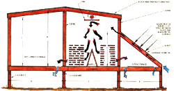

A Homemade Solar Lumber Kiln
If you're into woodworking, you can take a big step toward a more self-reliant living at little cost, including diagram, materials, solar panel construction, experiment for improvement.
By Edward A. Fassig
July/August 1982
The search for self-sufficiency is, as often as not, a "have to" rather than a "want to" proposition. Consider, if you will, the sequence of events that led to the creation of my solar-heated lumber-drying kiln.
I have a good life, doing what I want to do where I want to do it . . . that is, crafting handmade furniture from my home/shop in the hills of southeastern Ohio. I like the feel, shape, and texture of natural things . . . living and working in the woods . . . and the independence of being my own boss. In fact, in the past 30 years, there's been only one real problem that's consistently gummed up my otherwise idyllic situation . . . wet wood.
You see, building anything that's supposed to hold its shape-whether it be a log cabin or a piece of fine furniture-requires dry, well-seasoned lumber. And if, like me, you live a considerable distance from the nearest large town, finding that ready-to-use wood can be a real chore. You usually can't buy it at the local lumberyard (here in southeastern Ohio, at least, most such outfits stock only western softwoods, in precut standard sizes) . . . sawmills likely won't have any way to dry the lumber they cut for you ... the nearest commercial kilns (which generally won't be all that near) probably won't handle "exotic" woods (a term meaning anything they're not familiar with) . . . and if they do, they're surely not interested in taking on small jobs (which translates as anything less than a truckload).
However, I've been a self-sufficient country boy for the better part of my life, and I vowed to find a way to properly dry all that walnut, cherry, and native white pine that was available on my own land, even if I had to build a fire under it!
What I'd have to do, I realized, was construct a kiln. But, I wondered, what could I use for heat? Oil is too danged expensive, natural gas isn't available out here in the sticks, and I shuddered to think of the cords I'd have to cut to keep a woodburning kiln operating.
In short, I knew there had to be a better way. And it wasn't long before one of my customers provided the answer. That fellow and I were talking about my desire to build a lumber kiln, and about the problems I'd had trying to figure a way to provide the structure with heat, when he remembered reading about a sun-powered kiln that the U.S. Forest Service was experimenting with.
"Aw, come on," I said, "anyone who knows anything about lumber knows that exposure to the sun will surely split and warp it."
"I didn't write the article," he protested. "I just read it." Well, I was skeptical, but I figured it'd be worth a stamp to find out more . . . so I fired of a letter to the regional office of the U.S. Forest Service in Madison, Wisconsin, requesting any information they might have on sun-heated lumber-drying kilns.
UNCLE SAM TO THE RESCUE
click here to enlarge
The material arrived in record time. I opened the envelope and-lo and behold!-found a set of plans for building a solar kiln, including charts that specified the drying periods required for various species and thicknesses of wood. At that time (about two years ago), the Forest Service experiments were still in their infancy, so the amount of information contained in the charts was fairly scanty, but it was enough to turn my "have to" concern into a "want to" determination.
According to the Forest Service data, inch-thick boards could be dried in as little as 30 days in the kiln . . . while two-inchers would take from 45 to 90 days. Now that may sound like a long spell to sit around waiting for lumber to dry . . . but in fact, it's impressively brief when compared with the time required for air-drying lumber: approximately one year per inch of thickness. And even after all that time, air-dried planks frequently aren't dry enough for my purposes.
For example, here in Ohio the moisture content of lumber stored outside rarely drops to as low as 15%. (I just bought some pine that had been stacked outdoors for five years, and it tested 14%.) And if the chances of warping are to be kept to a minimum, construction lumber should have no more than 10% moisture content, while 8% is recommended for furniture work.
GETTING STARTED
The pictures accompanying the Forest Service plans showed a small building, similar to a chicken shed, with solar panels on its south-facing side. A materials list for the entire assembly and specific directions for building the solar panels were included with the package. In short, the whole project looked so marvelously simple that I wondered why I hadn't thought of it myself. I realized that I'd have to make a few minor changes in the plans to suit my particular needs, but the basic concept certainly appeared to be workable.
My son and I launched the kiln project by felling a few trees and sawing out enough boards and beams to do the framing-in. (I'm fortunate enough to have a 40-acre woodlot, a chain-saw lumber mill, and a 25-year-old son who's strong as a bull . . . but even working alone, you shouldn't have any problem building a kiln with simple electrical and hand tools.)
MATERIALS
I decided to use 4 X 8's for the beams, 2 X 8's for floor joists, and 2 X 4's for wall studs and rafters. We covered the outside walls of the little building with scrap aspen, sliced 3/4" thick and left with the bark still on its edges. My lumber purchases were limited to two sheets of plywood for the doors, three sheets of 1/4" Masonite hardboard for solarpanel backing, and some 1 X 3 furring strips for the roof frame.
When it came time to close in the building, I topped it off with corrugated metal and two sheets of corrugated fiberglass that I happened to have on hand. (By the way, I soon discovered that there's no heat-gain advantage to using the translucent fiberglass. In fact, after I'd painted the metal roofing flat black, it actually seemed to transmit more heat to the inside of the kiln than did the fiberglass.) Finally, I shopped the Volunteers of America thrift store and a few local junkyards for storm windows to use as glazing for the solar panels.
I have about $210 invested in the kiln, all told-including hardware and two 21 " window fans that cost approximately $18 each-and needed only three days of construction time to complete the whole works!
RECYCLE AND SAVE
If you're thinking of building a kiln like mine, I strongly recommend that you take advantage of recycled materials. After all, the structure doesn't have to be fancy . . . old barn beams and secondhand lumber will do just fine. And if you're lucky enough to have a sunny, unused outbuilding of about the right size-or even a vacant southwest corner in the barn-it can easily be retrofitted with solar panels to become an "instant" lumber-drying kiln.
For example, I have a friend who-after seeing how well my kiln worked-converted his pole barn into a commercial-size dryer that's able to handle 50,000 board feet of lumber at a time! After painting the entire barn black, he nailed 2 X 4 furring strips vertically to the east, south, and west sides . . . then stretched heavy plastic film over the whole works. The air-space between the glazing and the dark metal siding acts as a huge solar collector. My buddy does use an electric dehumidifier during the final stage of the drying process, but it serves only to speed things up a bit. All in all, I'd have to say that his pole-barn solar kiln is a real success.
LET'S BUILD!
Once I'd gathered all the required materials, I chose a building site and set to work, using treated posts for supports and placing the kiln's floor 2 feet above the ground. A 12-1/2' X 16' working floor space seemed adequate to me (the extra 6 inches of width allows me a bit of maneuvering room when I'm handling 12' lengths of lumber), but those are the interior dimensions. The total floor size is 12-1/2' X 22' . . . the additional 6 feet of length extends beyond the south wall to support the bases of the solar panels.
After sinking the corner posts, I went on to finish the floor, wall studs, siding (I covered all but the bottom 5 feet on the south wall, where the solar panels are located), roof frame, and then the corrugated metaland-fiberglass roof to cap it all off. My solar panels, built into the south wall, went up last. (The Forest Service plans recommend fabricating the panels separately, then installing them after the building is completed. But I believe it's easier just to build the panels directly onto the kiln.)
SOLAR PANEL CONSTRUCTION
Most literature on solar theory recommends that collectors be slanted to the degree of latitude of the building site, plus 15°. Using that formula, I estimated that 40° would be close to optimum here in southeastern Ohio. But since the sun crosses on a lower arc in winter than it does in summer, I figured I wouldn't be able to hit the correct angle on a year-round basis anyway, so I simply set the collectors at 45°. (Solar panels work more efficiently when slanted so that they'll face the sun's rays at an angle as close to 90° as possible . . . the more directly the light strikes the collectors, the less energy will glance off and the more will be absorbed.)
I began building the sun-grabbers by nailing 2 X 4 wall studs-at 45° angles from the south edge of the floor and 24 inches on center-to the top of the 5-foot opening in the south wall of the kiln. Next, I nailed the sheets of Masonite hardboard to the bottom sides of the angled 2 X 4 studs.
The inner surfaces of my collectors were formed from a stack of 24" X 30" flat aluminum sheets that I obtained from the local newspaper printer (they're used one time, then either sold for pennies each or tossed out). I simply bent a lip on two edges of each piece of aluminum so they could be tacked between the angled 2 X 4's and supported by the hardboard sheets that were secured to the bottoms of the studs.
With the Masonite and aluminum in place, I painted the exposed side of the metal and the 2 X 4 framework flat black. Then I set the recycled storm-window glass across the 2 X 4 studs and nailed a strip of wood across the bottom of each frame to keep the glass from sliding off. Presto! Solar panels.
And they worked. . . hot air began boiling out of the top openings of the collectors soon after the glass was laid in place. Unheated air enters at the open bottoms of the collectors, is warmed as it passes over the black panels, rises to the top openings, then dumps into the drying room.
EXPERIMENT FOR IMPROVEMENT
Having come this far, I decided to experiment a bit to see if I could improve the efficiency of my home-built kiln. For starters, I placed inexpensive thermometers at the tops of two adjacent solar panels. They indicated that the temperature of the air leaving the solar collectors was about 120°F.
Since I recalled reading that a corrugated surface makes a more efficient heat collector than does a flat surface (because it has more area to absorb heat), I modified a few of the aluminum sheets by bending them back and forth over a sawhorse. With this secondgeneration aluminum in place, the temperature of the solar-heated air rose a full 10°F! Needless to say, I removed and corrugated the rest of the sheets as well.
The Forest Service plans specified that the top-or glass-portions of the panels be tilted in a peak-and-valley, or "sawtoothed" fashion. The advantages of this arrangement had evaded me at first, so I had simply placed my collectors side by side to save time, materials, and work. But-since my first experiment had resulted in improved efficiency-I decided to give the recommendation a try and see what, if any, difference it might make:
I removed the glass covers from two adjacent collectors. Then, on top of the 2 X 4 angled stud located between the pair of test panels, I nailed another 2 X 4 board . . . this one set on edge to provide maximum elevation of the panels. I then replaced the glass and positioned thermometers at the tops of the two units. The panel tilted slightly toward the sun showed a heat gain of 10°F, while the panel facing slightly away from the sun was 10° cooler than it had been. The two collectors measured the same temperature only at noon, and so it appeared that the total amount of heat absorption would be the same with or without the sawtoothed arrangement.
Luckily, I decided to stick with the modification for a few days, and the advantage of angling the glass panels quickly made itself known . . . the east-slanted glazing caught the morning sun sooner, while the west-slanted panel kept Sol's attention longer into the afternoon, and the arrangement effectively added about an hour to the kiln's workday. The gains seemed enough to justify changing all my unit's panels over to the saw-toothed pattern.
Still searching for more efficiency, I began to experiment with closing off-bit by bit-the bottoms of the solar panels. When these intakes were left open, the air would rush through and out the tops. I found that the more I closed off the bottoms of the panels, the more slowly the air traveled through . . . and the warmer it got. After several tries, I settled on leaving the lower ends about half closed.
As a result of all my playing around with the solar panels, the heated air now runs about 140°F . . . a gain of 20° over the original setup.
WHY A SOLAR KILN WORKS
The Forest Service literature did a dandy job of telling me how to build a solar-heated lumber kiln, but it never did explain why or how the darn thing works. The principles involved probably seem pretty basic to those of you who are already familiar with methods of harnessing the sun, but I had to think back to my ninth-grade science class before I really understood the contraption.
To put it simply, the solar kiln functions because air expands in direct proportion to its temperature. In other words, if one cubic foot of 50°F air is heated to 100°F, its volume will double. But the amount of water suspended in that original cubic foot of air will remain the same, and-since we now have two cubic feet of air--he relative humidity will be reduced by 50%. That warmer, drier air is thirsty, so it will absorb moisture from the damp wood stacked in the kiln.
AIR CIRCULATION IN THE DRYING ROOM
After the heated air enters the drying room from the tops of the collectors, it continues to rise, bunching up near the ceiling. To break up this temperature-layering effect, it's necessary to find a way to move the warm air down to the waiting lumber. Here's how I handled the heat-circulation problem: My boards are stacked on the floor in two piles. I built two A-shaped baffles between the two heaps of lumber, each about 4 feet high and 2 feet wide at the bottom. Then I hung two window fans, near the ceiling, in such a way that they blow the hot air down onto and between the two stacks of lumber.
The A-baffles help deflect the downward flow of heated air toward the sides and bottoms of the stacks. To increase air circulation and to speed drying time, I place 1 X 1 furring strips between the layers of wood . . . allowing the heated air to pass both above and below each piece of lumber in the stack.
Fresh air, then, is continually being drawn in through the solar panels, heated, and circulated evenly throughout the kiln . . . absorbing moisture as it goes and finally exiting through floor vents. My system keeps the interior of the kiln an average of 30° warmer than the outside air.
WHEN THE SUN WON'T SHINE
I've found only one serious shortcoming in my solar kiln's operation: It flat ain't worth a hoot if the sun don't shine . . . which is the case for weeks at a 'time during a typical Ohio winter. In fact, I can almost forget about drying lumber in my kiln between December and April.
Of course, the interior of the kiln will always be somewhat warmer than outside . . . and any increase in air temperature in the kiln will have some drying effect. And even if cold, cloudy days stretch on for a month straight, I know my lumber is at least stored inside and out of the weather.
ADVANTAGES OF A SOLAR KILN
To my way of thinking, one of the main advantages of the sun-heated kiln is the gentleness with which it dries the wood. The two circulating fans in my setup are wired through an old attic-fan thermostat, and they run only during the eight or ten hottest hours of the day. This allows the lumber to "rest" overnight, letting the moisture work its way from the interior to the surface of the wood.
Since this working out takes place in small daily increments, the difference between the internal and external moisture content of the finished product will be less than would be the case if the lumber underwent continual drying. (When the surface of wood dries too quickly, you see, the exterior fibers shrink faster than the interior ones . . .creating stress, cracking, splitting, and warping.)
And there's another, more subtle, bonus to using a solar drying kiln: Since the lumber can be placed inside the structure as soon as it's milled, the planks remain free of the sand and dirt that almost certainly would accumulate on them if they were stored outside . . . and that sort of grit is murder on cutting tools.
IN RETROSPECT
The lumber I've dried during the two years that my solar kiln has been in operation has proved to be of outstanding quality and durability . . .it's beautiful to look at and a joy to work with.
Better yet, the kiln's total operating cost has averaged about $10 a month (for electricity for the two fans), and the entire process all but takes care of itself. I just stack the green lumber in the kiln, check occasionally to be sure the thermostats and fans are performing as they should, and take the lumber out when it's dry.
In summary, I've found it quite satisfying to hop on the sun-power bandwagon in my own little way. My simple solar kiln has taken me a bit further along the golden road to self-sufficiency.
Measuring The Moisture Content of Lumber
I know of two ways to determine the moisture content of lumber. The first (which is used primarily in laboratory situations) requires five steps: [1] Weigh a sampleof the wood to be measured, [2] place the sample in an oven and carefully bake out all the moisture, (3] weigh the dried sample, [4] subtract the weight of the dried sample from its wet weight, and (5] use the difference to calculate the percentage of moisture in the original sample.
(This final step may need same clarification. Let's say the green sample weighs 20 ounces . . .and after drying, it weighs only 16 ounces. That means 4 ounces ofwater was baked out of the wood. Now that 4 ouncesof water weight represents one fifth, or 20%, of the weight of the green wood. The moisture contentof the original sample, then, was 20%.)
The second method of determining the moisture content of wood is much simpler-but not nearly so inexpensive-as the oven technique. It requires the purchase ofan electronic moisture tester.
I bought one of the gadgets a couple ofyears back, and it cost more than my entire kiln . . .about $230. But I do dry valuable woods on a relatively large scale, so I felt that the gauge was a worthwhile investment (after all, it's nice to know for sure when the drying process is complete).
There are several models of electronic moisture testers on the market today, but here's how mine works: Two metal prongs (actually, they're electrodes) are drivenabout an inch into the wood sample. An electrical current is then introduced through one electrode. It travels through the wood, is picked up by the second prong, and is sent to the tester to be measured. The water in the wood sample transmits the electricity from one electrode to the other . . . so the more moisture in the lumber, the more juice will get through.
After driving. the electrodes into the wood, I simply press a button, which turns on a red light and activates a buzzer. Then I turn a knob until the red light goes out and the buzzing stops. When this happens, I look at the indicator mark on the knob, which will be pointing to a number on a scale that runs around the knob. Keeping this reference number in mind, I can then refer to a chart on the tester to determine the percentage of moisture in the sample (the chart has different scales for different types and thicknesses of wood).
An electronic moisture tester is a fairly expensive "toy"; but I believe most serious woodworkers would find the device to be well worthwhile. By using mine, Iwas able to discover, for example, that the commercial kiln-dried planks available at the local lumberyard tested 17% rather than the 8% that was claimed for them. Now that doesn't necessarily mean the lumberyard folks were trying to cheat me. It's more likely that the extra moisture was simply absorbed from the air while the lumber was in storage. But how would I have known that without the tester?
 ""Staggered"" collector panels capture heat... Ceiling fans and floor baffles direct hot air flow... Wood is stored in both sides of the kiln. |
 |
|